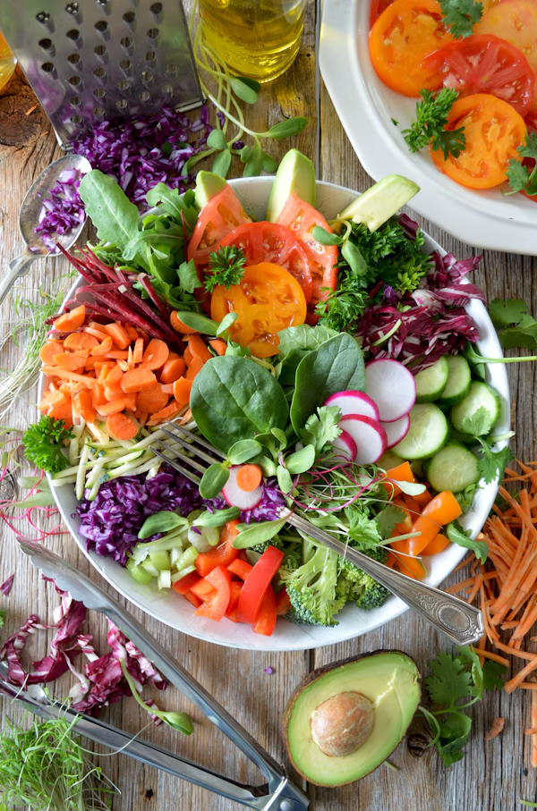
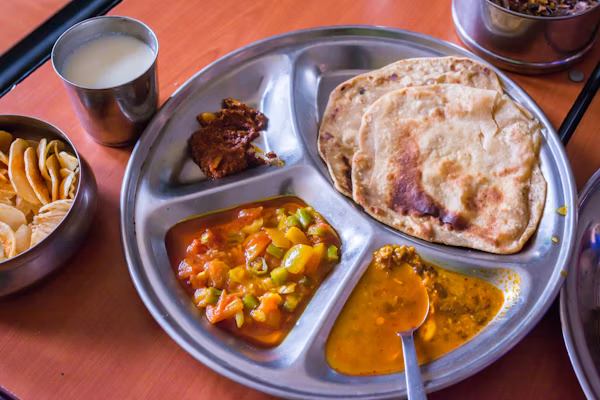
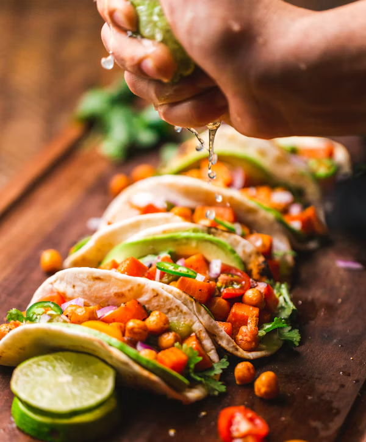

Zero-Waste Recipe & Spice Hub
Switch between Offline Mode for instant local recipes or Online Mode to search Google directly!

Sauté expiring soft spinach and bruised tomatoes into a warm herb salad.

Simmer overripe tomatoes with whole cumin seeds for a thick curry base.

Reheat leftover chicken with chili powder and fresh herbs in 15 minutes.
Offline Recipe Collection
Always available without an active internet connection.

Bake day-old bread with olive oil and paprika for crunchy salad toppings.

Combine leftover carrots and potato skins into a rich lentil soup.
Varieties of Spices
Spices naturally preserve food and turn leftover items into culinary delights.
Cayenne & Chili
Natural preservation properties that revive leftover meats.
Cumin & Coriander
Earthy aroma that transforms wilted greens into fragrant side dishes.
Garlic & Paprika
Savory essential base for seasoning roasted leftover vegetables.
Responsible Consumption
SDG Target 12.3 aims to halve global household food waste by 2030.
SustainaBite connects users with instant zero-waste recipes both online and offline to eliminate kitchen waste.
Responsible Production & Consumption
Prevent household food waste through accessible recipe search and spice awareness.